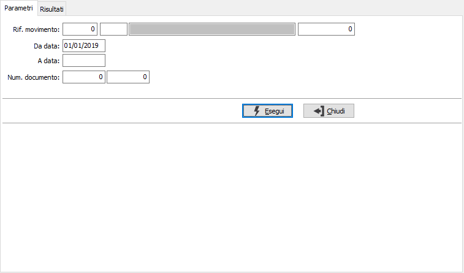
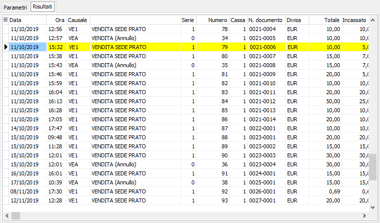

Annullamento stampa scontrino
La procedura consente di togliere il flag di stampa scontrino dal movimento di vendita; eseguita questa operazione il movimento di vendita può essere cancellato in modo da far quadrare la chiusura giornaliera del registratore con il totale del venduto di OS1 (per poter gestire situazioni che saltuariamente possono verificarsi come ad esempio il fine carta del registratore fiscale).
la finestra si articola su due pagine, una per i parametri ed una per i risultati; nei parametri è richiesto il riferimento al movimento, un periodo di date oppure il numero documento composto da numero chiusura e numero scontrino; se non gestito il "Documento commerciale" da configurazione, al posto del numero documento, sia come limite che come colonna, è presente il numero scontrino..

La pressione del pulsante Esegui dà inizio all'elaborazione, al termine viene visualizzata la pagina dei risultati dove sono riportati i movimenti; è possibile selezionare i movimenti per cui annullare la stampa dello scontrino con il doppio clic del mouse oppure tramite il menù associato al tasto destro del mouse; dopo aver effettuato la selezione utilizzando il pulsante Salva presente nella Toolbar sarà possibile effettuare il salvataggio definitivo.
